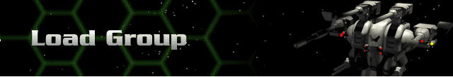

Single and multi-player games may be loaded from this dialog box. Note: when in single player mode, you may only load saved single player games, not multi-player games.
All multi-player games have a Force Value and a Rank Level. All multi-player games also have a creator, the person who initiates the game. The creator determines the Force Value and Rank Level for a multi-player game. The Force Value is the maximum value of all Hercs, weapons, devices, and Bioderms in your individual fleet. The Rank Level is similar to the Tech Level in single player mode. When you load a group, if it exceeds the Force Value or Rank Level that was set by the creator, you will be unable to play in that game.
Likewise, if the creator has set a Rank Level of 7 and you have any technology that was acquired at a higher Tech Level, you must remove that technology from any Herc configuration before your group will be “legal.”
After you have loaded a group, you will be dropped into the Herc Base. Click on Launch Mission to go to the Launch Multi-Player Menu.